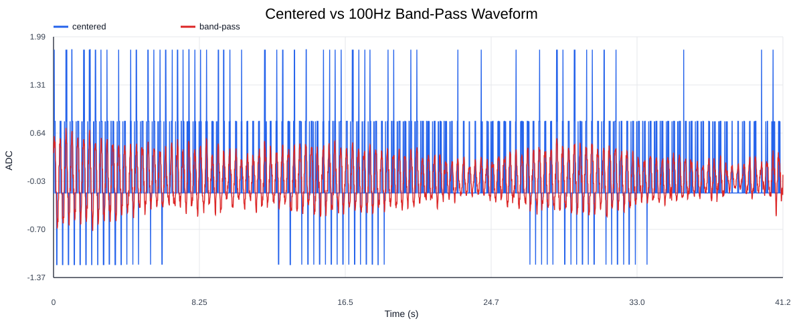
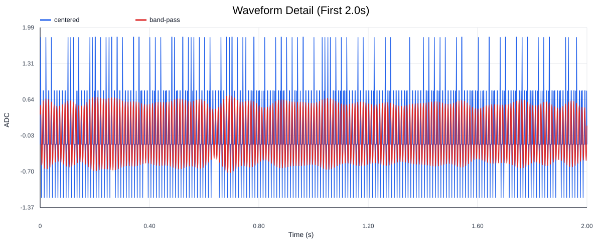
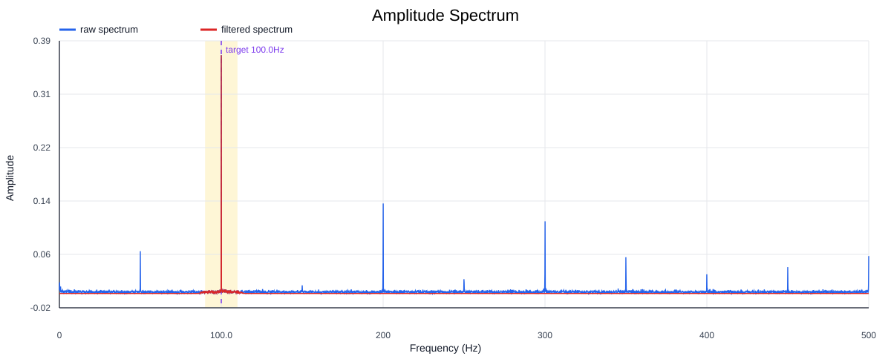
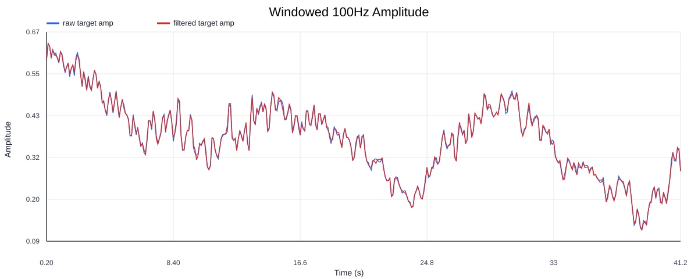
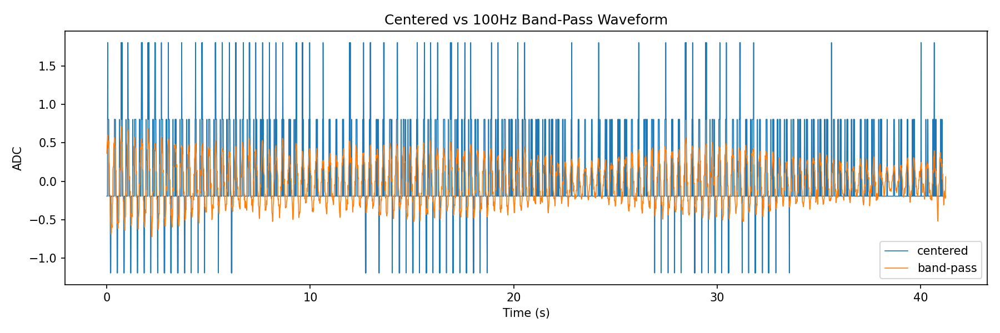
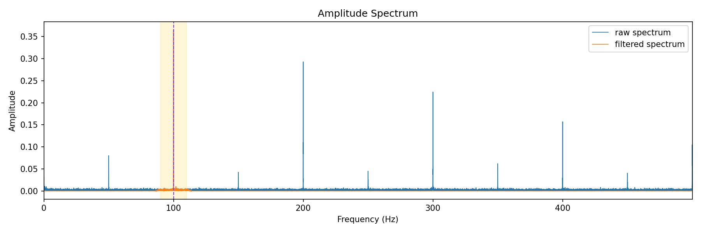

| Metric | Value |
|---|---|
| input_csv | F:\项目类文件夹\异物检测4.10\Data_Dual\100HZ实验组\串口数据\100Hz无异物.csv |
| sample_rate_hz | 1000.0 |
| target_freq_hz | 100.0 |
| band_low_hz | 90.0 |
| band_high_hz | 110.0 |
| transition_hz | 5.0 |
| sample_count | 41237 |
| duration_s | 41.237 |
| raw_min | 14.0 |
| raw_max | 17.0 |
| raw_mean | 15.194315784368406 |
| raw_std | 0.494015587732674 |
| centered_rms | 0.494015587732674 |
| centered_peak_to_peak | 3.0 |
| raw_dominant_freq_hz | 100.0072750200063 |
| raw_dominant_amp | 0.3653043127512014 |
| raw_target_bin_freq_hz | 100.0072750200063 |
| raw_target_amp | 0.3653043127512014 |
| filtered_rms | 0.2766926106888006 |
| filtered_peak_to_peak | 1.4560843647756045 |
| filtered_dominant_freq_hz | 100.0072750200063 |
| filtered_dominant_amp | 0.36530431275010544 |
| filtered_target_amp | 0.36530431275010544 |
| filtered_energy_ratio | 0.3136994933046221 |
| window_size | 200 |
| step_size | 100 |
| window_count | 411 |
| window_raw_target_amp_mean | 0.37195263910993775 |
| window_raw_target_amp_std | 0.10440582611657656 |
| window_filtered_target_amp_mean | 0.3718785600336184 |
| window_filtered_target_amp_std | 0.10442192244937121 |





